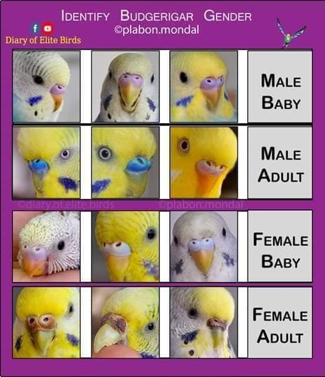

There are several species of parakeets, but the most commonly known in the United States is the budgie or budgerigar. Parakeets are actually a subspecies of parrots, though usually much smaller. The sizes can range from 7 to 18 inches, and they are noted for have a long tail which is about half of their total length. Parakeets are a popular pet but they can also be found in the wild. The most common seen are mostly green or blue in color.
You can tell if they are male or female by looking at the color of their cere, which is the lumpy part at the base of the beak. Males have blue or purple ceres, and the females have a pink or light brown cere. It may be hard to tell until the bird is about 1 year old. To be absolutely sure, you may need to have a DNA test done, because the bird’s sex organs are hidden inside the body.
Parakeets do not migrate, though many species travel long distances in pursuit of more advantageous feeding conditions. Monk parakeets have been tracked in their travels from southern Argentina to Bolivia, spanning of over 1500 miles of natural habitat.
The Parakeet originates from central Australia. Australia is the only location true wild flocks can be found. Parakeets thrive in a warm climates so wild flocks in other locations are feral. Parakeets are often called Budgerigars which is an Australian aboriginal name that translates “good bird” in English.
Parakeets are navtive australians that prefer mild-warm climates. Hundreds of parakeet species populate regions like Asia, Africa, Australia and Central/ South America. Typically each species evolves to adapt to local climates, but with extreme climate change can wipe a whole generation of parakeets (Source: Omelet.com). Ideal climate temperature ranges 60 - 70 deg during the day and can withstand up to almost 40 deg at night. These resourceful birds use local resources to provide food (seeds from grass and crops) and water (Source: AllThingsNature.com).
There are several species of parakeets, but the most commonly known in the United States is the budgie or budgerigar. Parakeets are actually a subspecies of parrots, though usually much smaller. The sizes can range from 7 to 18 inches, and they are noted for have a long tail which is about half of their total length. Parakeets are a popular pet but they can also be found in the wild. The most common seen are mostly green or blue in color.
You can tell if they are male or female by looking at the color of their cere, which is the lumpy part at the base of the beak. Males have blue or purple ceres, and the females have a pink or light brown cere. It may be hard to tell until the bird is about 1 year old. To be absolutely sure, you may need to have a DNA test done, because the bird’s sex organs are hidden inside the body.
Parakeets do not migrate, though many species travel long distances in pursuit of more advantageous feeding conditions. Monk parakeets have been tracked in their travels from southern Argentina to Bolivia, spanning of over 1500 miles of natural habitat.
Feral parakeets in North America present an interesting example of the species' traveling habits. Escaped birds have created parakeet communities across the United States. The map below shows the known ranges of common feral parakeets.
The parakeet has many threats in the wild that it must deal with on a daily basis. The main threats that they face are larger species of birds called raptor birds, such as eagles or falcons, as well as different species of snakes. Occasionally, even feral cats or rodents will raid nests for food or to steal the eggs of the parakeet. In an effort to avoid some of these predators, invasive parakeets in certain regions will even nest with a large bird called the stork, with which they share a symbiotic relationship. While all of these threats can be potentially deadly to the parakeet, it tends to be wary and stay out of the way, thus keeping itself largely out of danger when compared to other species of bird.
What do Parakeets Eat? (Complete Parakeet Food List) Parakeets (also known as budgies) are among the most popular pet birds across the globe. They’re fairly easy to take care of, but they’re small and vulnerable to some things, including some types of foods. Parakeets eat a mix of seeds: pellets, fruits, vegetables, legumes, and nuts. All of these play an important part in some way or the other, whether that be by providing budgies with the energy they need throughout the day or adding essential vitamins and minerals to their daily diet. Here's a list of what seeds are safe for Parakeets: Millet seeds/ Sunflower seeds/ Safflower seeds/ Canary seeds. A seed only diet is not ideal for any Parakeets. They can begin to suffer from vitamin and mineral deficienceies and develop a range of health problems from deramatitis to bone problems. Pellets can be a good way of getting you out of a tricky situation. You can place pellets in the Parakeet feeder and not worry about your birds going hungry while you are at work. Parakeets need fresh fruits, seeds, nuts, and vegetables on a daily basis, even if in small amounts. So, while pellets are good option for when you are away from home, they are not that nutritious, so you should not rely on them. Also nuts have healthy antioxidants and omega 3 essential fatty acids, but like other food groups, they have their drawbacks too. Here is a list of safe nuts to give to your parakeets: Walnuts/ Almonds/ Pecans/ Pistachios. Peanuts have the highest likelihood of being contaminated with mold. Here are a few examples of safe fruit that you can give to your budgies: Tangerines/ Apples/ Bananas/ Mango/ Coconut/ Melons/ Pineapple/ Watermelon/ Blackberries/ Peaches. Note: Cherries/Apricots are greated but you must remove their seeds or pits beforehand. If not they can choke which you must advoid at all cost.
target="_blank" href="https://worldbirds.com" title="Link to source" >World of birdsMed-sized cages are ideal size for indoor parakeets. There needs to be enough space for birds to fly short distances. Cage environments that simulate branches and tall grass are great for these birds. If the cage is too small, they will need to be brought outside so they can stretch their wings and play. Large aviaries exist to house multiple birds and allow pet owners to interact with them (Source: AllThingsNature.com).
Parakeets are known as one of the most vocal members of the parrot family. They have the ability to reproduce sounds that they hear and can develop quite large vocabularies. Whistling, chirping, and singing are all signs that a parakeet is happy and healthy. Chattering is also a sign of contentment, in addition males use chattering to gain attention and affection from females. Don’t be concerned if you hear your pet parakeet grinding its beak, it’s quite normal and is a way to comfort themselves before falling asleep. Chiding is a hiss or “tssk” and is used to indicate its space is being invaded. When multiple birds are in a cage, they will often use this sound to indicate they need more personal space. Squawking or loud chirping can be an indication that something is wrong, but it could also mean a male is ready to mate. Lastly, if you hear a parakeet screaming they may be in distress or pain.